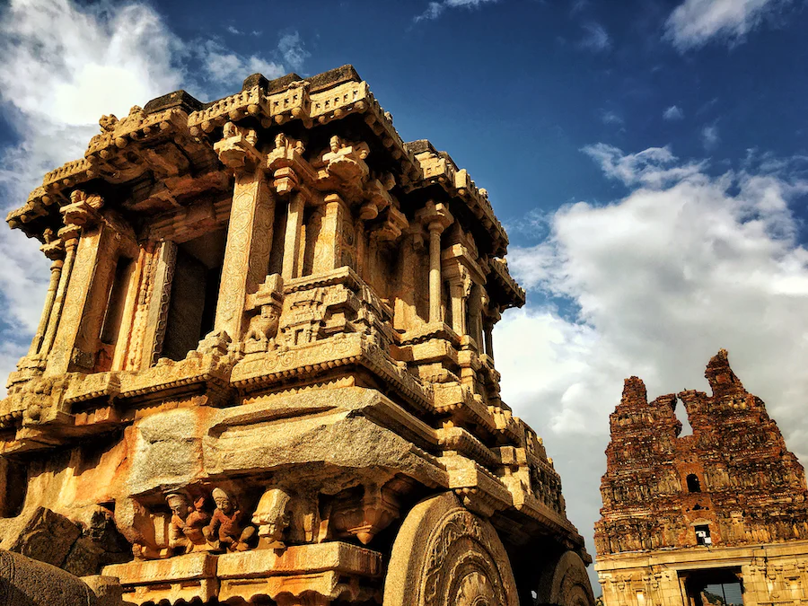

Hampi
Hampi, a UNESCO World Heritage Site in India, was the capital of the historic Vijayanagara Empire from the 14th to 16th centuries. Located in Karnataka, it boasts awe-inspiring ruins, including magnificent temples, palaces, and intricate stone carvings, showcasing the empire's architectural and cultural brilliance. Hampi's landscape, defined by boulders and the Tungabhadra River, adds to its allure. The site provides a captivating glimpse into a prosperous past, drawing history enthusiasts, archaeologists, and tourists alike. Its fusion of heritage and natural beauty makes Hampi an enchanting destination, preserving the legacy of a once-mighty civilization.
Mysore Palace
Mysore Palace, also known as the Amba Vilas Palace, is a captivating architectural masterpiece located in Mysore, Karnataka, India. This grand palace, built in the Indo-Saracenic style, served as the royal residence of the Wadiyar dynasty and is renowned for its opulence and intricate design. The palace features an imposing facade with domes, turrets, and intricate detailing, while the interiors boast exquisite artwork, ornate ceilings, stained glass, and intricately carved wooden doors. The palace is a testament to the grandeur of Indian royalty and is a major tourist attraction, hosting the dazzling Mysore Dasara festival annually.Its illuminated splendor during special occasions and festivals.

Badami Caves
The Badami Caves, a group of rock-cut cave temples dating back to the 6th century, showcase a blend of Hindu, Jain, and Buddhist architecture. Carved into the sandstone cliffs, they feature four main caves, each adorned with intricate sculptures and reliefs depicting various deities, mythological scenes, and royal processions. Cave 1 is dedicated to Lord Shiva, while Caves 2 and 3 are Jain temples, and Cave 4 features exquisite carvings and a seated figure of Mahavira. The Badami Caves stand as a remarkable testament to the artistic and religious heritage of ancient India, surrounded by picturesque landscapes and a tranquil lake.

Belur and Halebidu Temples
Belur and Halebidu house remarkable Hoysala temples, showcasing intricate craftsmanship from the 12th century. Belur's Chennakeshava Temple boasts splendid sculptures, depicting deities, dancers, and celestial beings in breathtaking detail. Halebidu's Hoysaleswara Temple displays exceptional artistry in its ornate carvings, featuring divine themes, animals, and mythological narratives. Despite centuries of weathering, these temples remain captivating examples of the Hoysala dynasty's architectural brilliance, drawing art enthusiasts and history aficionados to experience rich heritage. Belur and Halebidu reveal Hoysala temples' intricate artistry, enchanting the visitors.

Shravanabelagola
Shravanabelagola, a revered Jain pilgrimage site in Karnataka, India, boasts a colossal monolithic statue of Lord Gomateshwara. This 10th-century marvel stands as one of the world's tallest free-standing statues, symbolizing Jain principles of non-violence and detachment. The site's sacred ambiance, steeped in spirituality, attracts devotees and tourists alike, offering a serene escape to connect with Jain heritage amidst the natural beauty of the landscape.

Gol Gumbaz
Gol Gumbaz, located in Bijapur, Karnataka, India, is a majestic mausoleum and an architectural marvel from the 17th century. Its central dome, one of the largest in the world, is renowned for its acoustic properties, creating the "whispering gallery" effect. The structure exemplifies Indo-Islamic design, featuring intricate detailing, arches, and geometric patterns. The tombs of Mohammed Adil Shah and his family lie within, reflecting the grandeur of the Adil Shahi dynasty.